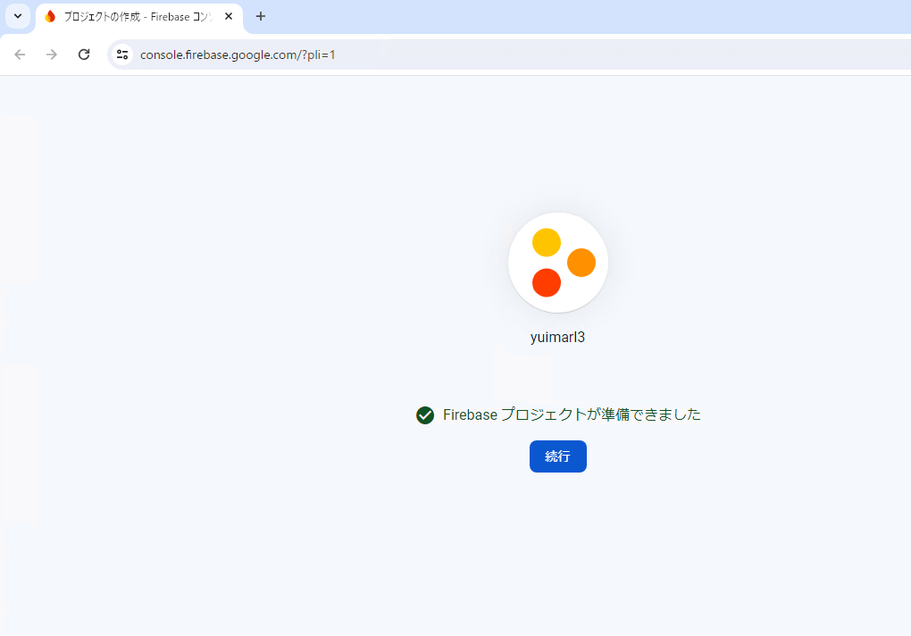
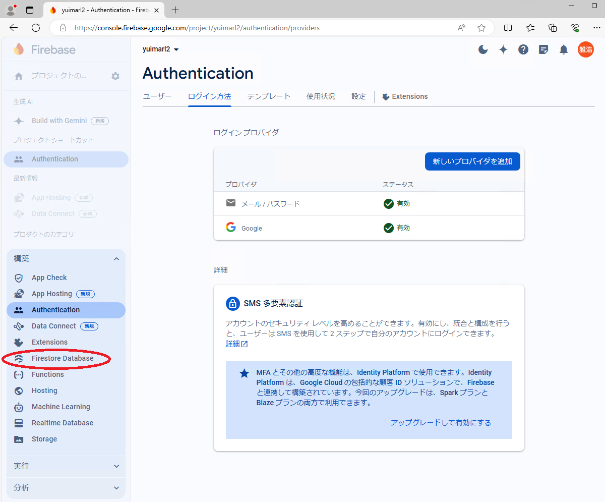
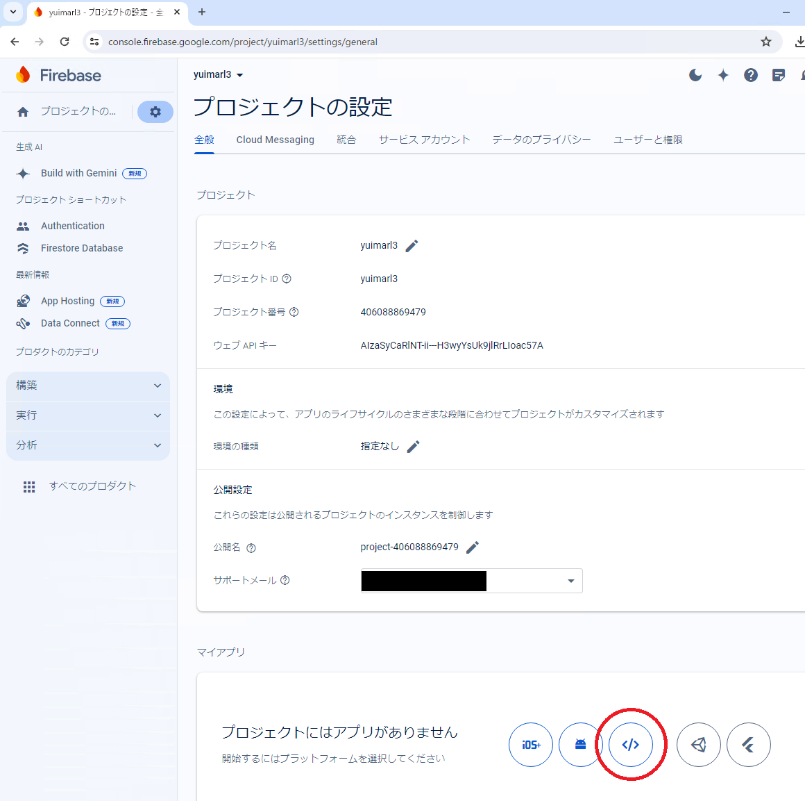
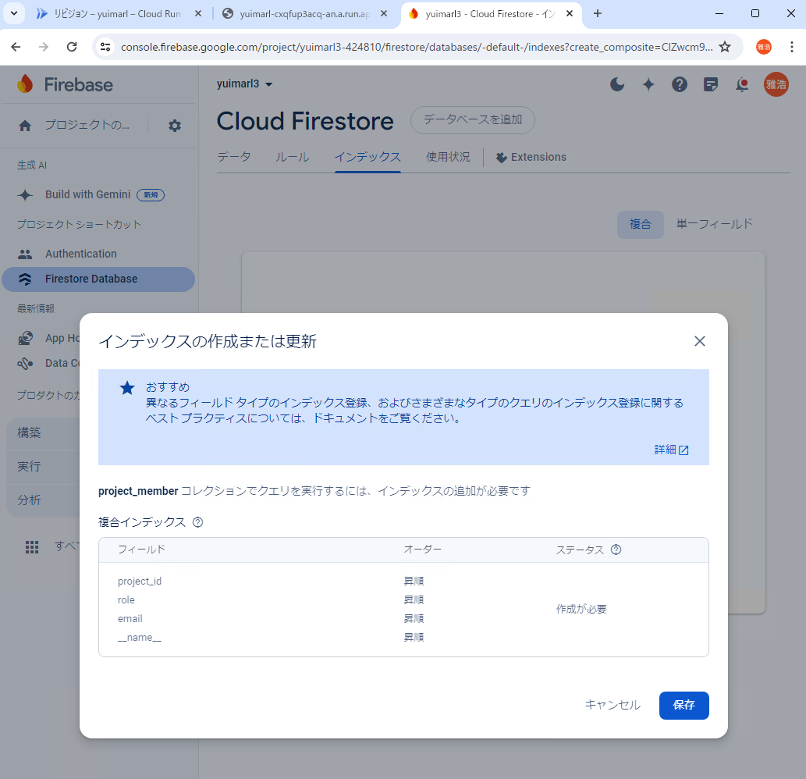

運用環境構築
Yuimarlの運用環境は、以下の手順でセットアップを行います。
Firebase プロジェクトを作成する
Firebase コンソールで「プロジェクトを作成」をクリックします。
プロジェクトの名前を入力して「続行」をクリックします。
「続行」をクリックします。
{kind=link}
「続行」をクリックします。
{kind=link}
Firebase プロジェクト画面の左側のメニューで「構築」をクリックして展開します。
{kind=link}
「構築」の中の「Authentication」をクリックします。
{kind=link}
「Authentication」の「始める」をクリックします。
「ログイン方法」の「メール / パスワード」をクリックします。
{kind=link}
「メール / パスワード」を「有効にする」にして「保存」をクリックします。
「新しいプロバイダを追加」をクリックします。
{kind=link}
「Google」を「有効にする」にし、サポートメールを選択して「保存」をクリックします。
必要に応じて、他のプロバイダも追加してください。
本番環境として使う場合は、Authentication の「設定」の「承認済みドメイン」から、「localhost」を削除してください。
開発環境、テスト環境として使う場合は、「localhost」を残したままで大丈夫です。
{kind=link}
「構築」の中の「Firestore Database」をクリックします。
{kind=link}
「Cloud Firestore」の「データベースの作成」をクリックします。
{kind=link}
{kind=link}
「テストモードで開始する」を選択して「作成」をクリックします。
{kind=link}
「プロジェクトの設定」をクリックします。
「マイアプリ」にある「</>」アイコンをクリックします。
{kind=link}
「アプリのニックネーム」を入力して「アプリを登録」をクリックします。
「Firebase SDK の追加」で「<script>タグを使用する」を選択して「コンソールに進む」をクリックします。
（表示されたスクリプトの中の「firebaseConfig」の内容を保存しておいてください。）
{kind=link}
Cloud Run を設定する
Google Cloud コンソールにログインして「プロジェクトの選択」をクリックします。
{kind=link}
「コンテナ化されたアプリの実行 Cloud Run」をクリックします。
{kind=link}
「サービスを作成」をクリックします。
「課金を有効にして Cloud Run の使用を継続します」画面が表示された場合は、「[お支払い]に移動」をクリックして支払いの設定を行います。
{kind=link}
「サービスを作成」で次の画像のように設定します。
（ 「コンテナイメージのURL」は、Docker Hub に登録されている最新のイメージを設定します）
「コンテナ、ボリューム、ネットワーキング、セキュリティ」の「コンテナ」の「変数とシークレット」に、「Firebase SDK の追加」で表示された firebaseConfig の値を追加して「作成」をクリックします。
| 環境変数 | 設定する値 |
|---|---|
| GOOGLE_PROJECT_ID | firebaseConfig の projectId |
| API_KEY | firebaseConfig の apiKey |
| AUTH_DOMAIN | firebaseConfig の authDomain |
| STORAGE_BUCKET | firebaseConfig の storageBucket |
| MESSAGING_SENDER_ID | firebaseConfig の messagingSenderId |
| APP_ID | firebaseConfig の appId |
| MEASUREMENT_ID | firebaseConfig の measurementId (これが無い場合は空欄) |
| RUST_LOG | 「debug」または「info」。出力されるログをdebugレベルとするかinfoレベルとするかの設定。 |
サービスがデプロイされたら、URL にアクセスします。
Yuimarl ログイン画面でログインします。
Yuimarl の操作中に、次のようなエラー画面が表示されることがあります。これは、データベースのインデックスが作成されていない場合のエラーです。
「You can create it here: 」の次に表示されている URL（画像で選択してある部分）にアクセスすると、インデックスの作成画面になるので、そこでインデックスを作成することができます。
{kind=link}
次のような「インデックスの作成または更新」画面で「保存」をクリックするとインデックスが作成されます。
{kind=link}
ステータスが「ビルド中...」から「有効」に変わったらインデックスが作成されました。